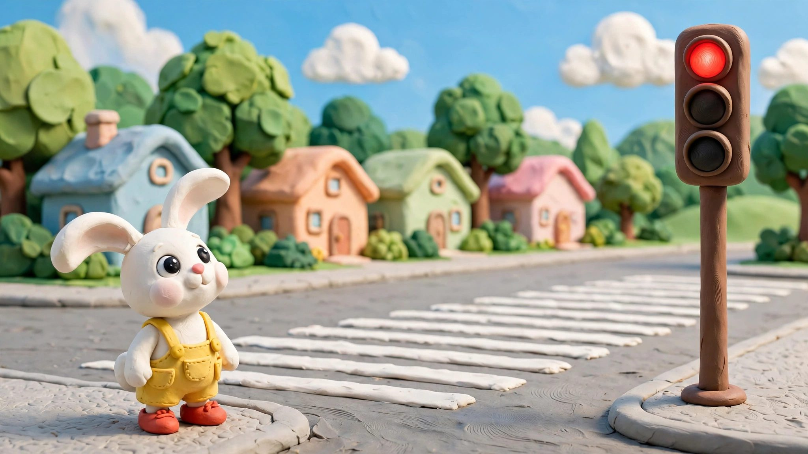
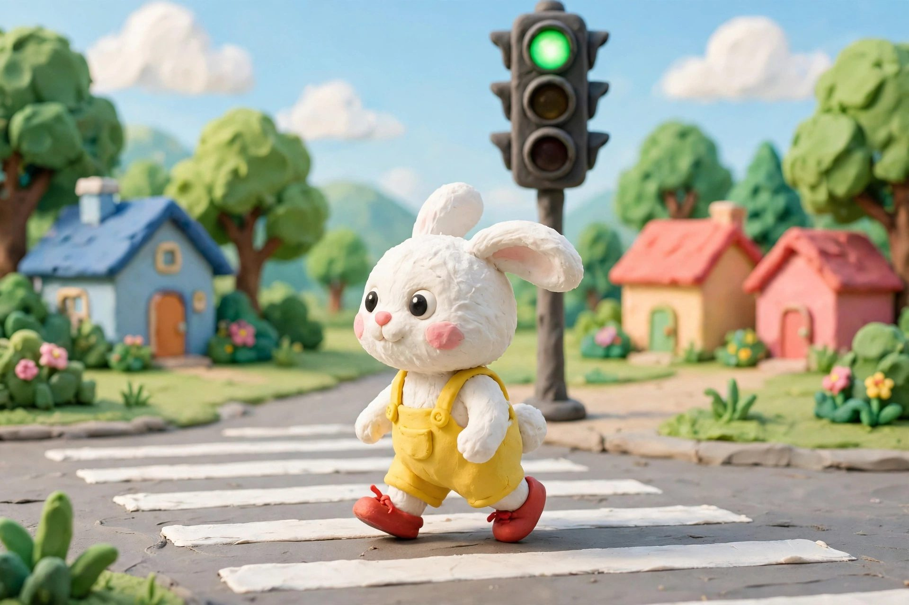
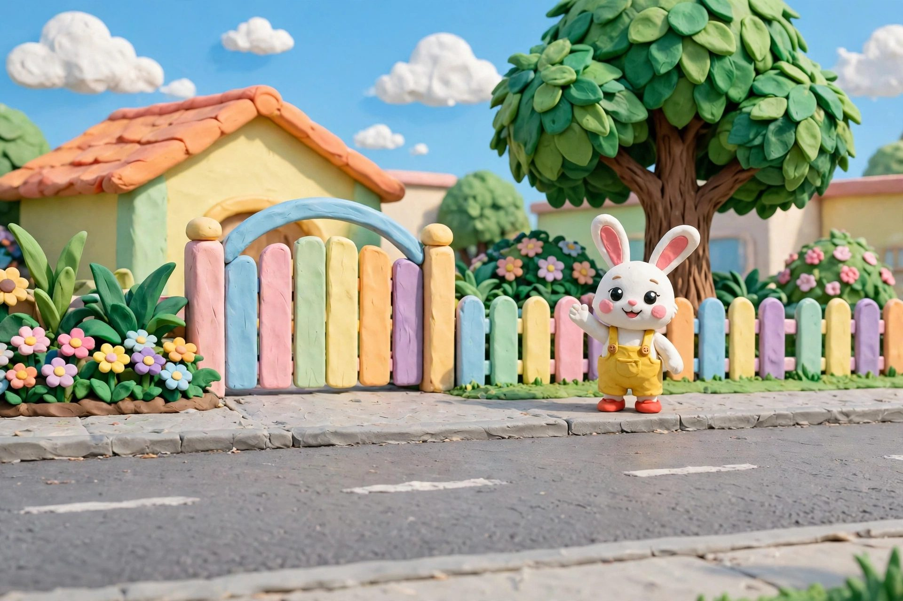

课件工坊 · 面向幼儿园与中小学老师
给一个主题，拿到一整套能直接上课的课件包
老师只说一个主题（比如中班安全教育《红灯停，绿灯行》），课件工坊交付以视频教学素材为主、配齐插图、教案、提问和延伸活动的一整套课件。所有内容都是草稿，由老师核对、修改后再用于课堂。
一个主题，五样东西
课堂上真正缺的是能放给孩子看的图和视频。课件工坊把视频放在中心，其余四样都围绕同一条分镜来做，图、问题和活动前后对得上。
-
主产品
视频教学素材
按分镜制作的短视频：画面、旁白和节奏贴合年龄段，课堂上直接播放。
-
配套插图组
与视频同一角色、同一画风的插图，可打印、可贴墙、可做翻页讲述。
-
教案概要
活动目标、准备、过程和视频在哪一步播放，一页看清。
-
提问卡
围绕视频关键画面的提问，帮老师在播放前后引导孩子说一说。
-
延伸活动单
区角游戏、亲子任务等课后延伸，把视频里学到的放进生活。
首个样例
中班安全教育《红灯停，绿灯行》
样片已经做出来了，下面就是这套课件的视频本体：黏土绘本风，四个镜头，主角是一只小兔子，从路口等灯、过斑马线，一直走到幼儿园门口。视频下方是它的真实分镜脚本。
样片实录 · 中班安全教育《红灯停，绿灯行》 · 全长约 22 秒 · 旁白与画面逐镜对照见下方分镜
-
镜头 1
画面十字路口全景，小兔子站在斑马线前看红绿灯
旁白「小朋友们，过马路的时候，要先看看红绿灯。」

-
镜头 2
画面近景，红灯亮，小兔子站在路边等待，车从面前驶过
旁白「红灯亮了，停一停，站在路边等一等。」
-
镜头 3
画面绿灯亮，小兔子左右看后走斑马线
旁白「绿灯亮了，先看左边，再看右边，没有车，走斑马线。」

-
镜头 4
画面小兔子到达幼儿园门口挥手
旁白「安安全全过马路，我是交通小标兵！」

文书小工具
此外还有三个文书小工具：观察记录与成长档案、教案与周计划、家长沟通话术，可导入 Dify / n8n 或按清单在扣子（Coze）里搭建，下面是其中一个示例。
隐私提醒：输入前去掉真实姓名。请用化名或代号称呼孩子，不要输入真实姓名、照片、电话、身份证号、住址或园所/学校信息。本页示例全部使用化名，场景为虚构。
示例：一条观察记录从速记到成稿
下面的输入和三份输出原样取自已合并的教师 AI 工作流包 ai-staff-pack 中“观察记录与成长档案助手”的示例，未做任何改写。孩子的名字是化名，场景为虚构。
① 老师的白话速记（输入）
② 工作流步骤
③ 三份可编辑的输出
数据来源
- 工作流包：（
v） - 仓库：
，提交（） - 示例：
- 本站副本：
data/ai-staff-pack/（含 SHA-256 记录，测试会校验未被改动）
本页是静态网页，不调用任何模型或接口；示例输出是工作流包里的参考成稿，你自己运行时模型的输出会有差异，需要老师核对后再使用。
联系
来信时请写下年龄段（如中班）和想做的课件主题。请不要在邮件里附带孩子的真实姓名或照片。
- 邮箱kerry@muse.ai
- 微信微信号待公布